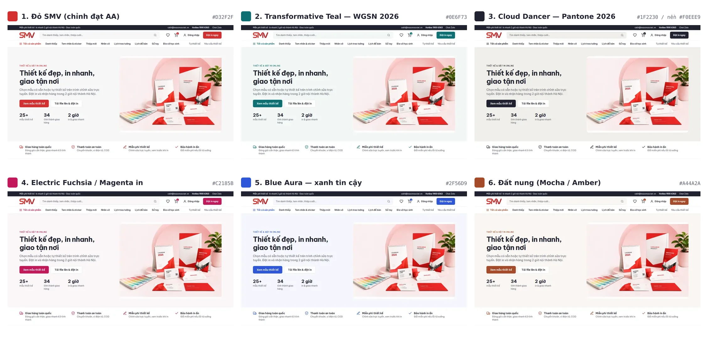

Chọn màu chủ đạo
✅ Đã chốt 17/10/2026: phương án 2 — Transformative Teal. Xem mockup mới →
6 phương án dựa trên màu xu hướng 2026. Cùng một bố cục, chỉ đổi màu nút, nhấn và nền. Logo giữ màu đỏ thương hiệu. Mọi màu nút đều đạt tương phản ≥ 4,5:1 với chữ trắng (WCAG AA).
Lưu ý màu hiện tại: đỏ
#E53935 trên web hiện nay chỉ đạt 4,23:1 với chữ trắng (dưới chuẩn 4,5:1). Phương án 1 giữ đỏ nhưng chỉnh đậm thành #D32F2F (4,98:1).

Màu xu hướng 2026 — nguồn
- Pantone Color of the Year 2026: Cloud Dancer (11-4201) — trắng ngà ấm, xu hướng nền trung tính dịu + một màu nhấn đậm.
- WGSN × Coloro Color of the Year 2026: Transformative Teal (092-37-14) — xanh lam pha xanh lục, gắn với chủ đề bền vững.
- WGSN × Coloro màu chủ chốt Xuân/Hè 2026: Electric Fuchsia, Blue Aura, Amber Haze, Jelly Mint.
- Xu hướng UI 2026: nền trung tính ấm/đất (clay, sage, sand), 1–2 màu nhấn mạnh, tránh màu lạnh nhạt vì dễ trượt chuẩn tương phản.